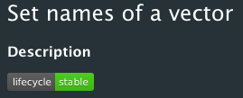

lifecycle provides a set of tools and conventions to manage the life cycle of your exported functions.
Usage
Use lifecycle to document the status of your exported functions and arguments:
Choose one of the 7 lifecycle stages a function or argument can be in. You can choose from 4 development stages (experimental, maturing, stable, and questining) and 3 deprecation stages (soft-deprecated, deprecated, and defunct).
If the function or argument is deprecated, make sure your users know about by calling
deprecate_soft(),deprecate_warn(), ordeprecate_stop(). These functions try to be informative without being too verbose, with increasing levels of verbosity as the deprecation stage advances.Include the relevant lifecycle badge in your documentation.
Stages
The lifecycle stages for functions and arguments closely mirror the lifecycle stages for packages.
There are 4 development stages.
 This is a new feature that is in the very early stage of development. It is exported so users can start to use it and report feedback, but its interface and/or behaviour is likely to change in the future. It is generally best to avoid depending on experimental features.
This is a new feature that is in the very early stage of development. It is exported so users can start to use it and report feedback, but its interface and/or behaviour is likely to change in the future. It is generally best to avoid depending on experimental features. . The interface and behaviour of a maturing feature has been roughed out, but finer details are likely to change. It still needs more feedback to find the optimal API.
. The interface and behaviour of a maturing feature has been roughed out, but finer details are likely to change. It still needs more feedback to find the optimal API. A feature is considered stable when the author is happy with its interface and behaviour. Major changes are unlikely, and breaking changes will occur gradually, through a deprecation process.
A feature is considered stable when the author is happy with its interface and behaviour. Major changes are unlikely, and breaking changes will occur gradually, through a deprecation process. The author is no longer convinced that the feature is the optimal approach. However, there are no recommended alternatives yet.
The author is no longer convinced that the feature is the optimal approach. However, there are no recommended alternatives yet.
Once the decision of discontinuing a feature has been made, it goes through 3 deprecation stages.
 . The author is no longer happy with a feature because they consider it sub-optimal compared to some other approach, or simply because they no longer have the time to maintain it. A soft-deprecated feature can still be used without hassle, but users should consider switching to an alternative approach.
. The author is no longer happy with a feature because they consider it sub-optimal compared to some other approach, or simply because they no longer have the time to maintain it. A soft-deprecated feature can still be used without hassle, but users should consider switching to an alternative approach. . The feature is likely to be discontinued in the next major release. Users should switch to an alternative approach as soon as possible.
. The feature is likely to be discontinued in the next major release. Users should switch to an alternative approach as soon as possible. . The feature can no longer be used. A defunct function is still exported, and a defunct argument is still part of the signature. This way an informative error can be thrown.
. The feature can no longer be used. A defunct function is still exported, and a defunct argument is still part of the signature. This way an informative error can be thrown.
Finally, when a feature is no longer exposed or mentioned in the released version of the package, it is said to be archived.
Badges
Make sure your users know what stage a feature is by adding badges in the help topics of your functions.

Call
usethis::use_lifecycle()to import the badges in your package.-
Use the
lifecycleRd macro to insert a badge:#' \lifecycle{experimental} #' \lifecycle{soft-deprecated}This badge renders as text in non-HTML documentation. To document the status of a whole function, a good place to include the badge is at the top of the
@descriptionblock. To document an argument, you can put the badge in the argument description. For functions in development, you typically don’t need to advertise the status if it is the same as the package as a whole. For instance, if your package is maturing, only signal functions in the experimental, stable, and questioning stages.
Verbosity of deprecation
lifecycle offers three levels of verbosity corresponding to the three deprecation stages.
-
Soft deprecation: At this stage, call
deprecate_soft()to start warning users about the deprecation in the least disruptive way.This function only warns (a) users who try the feature from the global workspace, and (b) developers who directly use the feature, when they run unit tests with testthat. No warning is issued outside of unit tests, or when the deprecated feature is called from another package then ther own.
When a warning does get issued, users only see it once per session rather than at each invokation.
Deprecation: At this stage, call
deprecate_warn()to warn unconditionally about the deprecated feature. The warning is issued only once per session.Defunct: The feature is discontinued. Call
deprecate_stop()to fail with an error.
Deprecating functions
These functions take the version number starting from which the feature is considered deprecated (it should remain the same across all deprecation stages), and a feature descriptor:
deprecate_warn("1.0.0", "mypkg::foo()")
#> Warning message:
#> `foo()` is deprecated as of mypkg 1.0.0.You can optionally provide a replacement:
deprecate_warn("1.0.0", "mypkg::foo()", "new()")
#> Warning message:
#> `foo()` is deprecated as of mypkg 1.0.0.
#> Please use `new()` instead.For the purpose of these examples we explicitly mentioned the namespace with mypkg::, however you can typically omit it because lifecycle infers the namespace from the calling environment. Specifying the namespace is mostly useful when the replacement is implemented in a different package.
# The new replacement
foobar_adder <- function(foo, bar) {
foo + bar
}
# The old function still exported for compatibility
foobaz_adder <- function(foo, bar) {
deprecate_warn("1.0.0", "foobaz_adder()", "foobar_adder()")
foobar_adder(foo, bar)
}Deprecating arguments
The syntax for deprecating argument is based on the syntax for deprecating functions:
deprecate_warn("1.0.0", "mypkg::foo(arg = )")
#> Warning message:
#> The `arg` argument of `foo()` is deprecated as of mypkg 1.0.0.
deprecate_warn("1.0.0", "mypkg::foo(arg = )", "mypkg::foo(new = )")
#> Warning message:
#> The `arg` argument of `foo()` is deprecated as of mypkg 1.0.0.
#> Please use the `new` argument instead.lifecycle also provides the deprecated() sentinel to use as default argument. This provides self-documentation for your users, and makes it possible for external tools to determine which arguments are deprecated. This sentinel is simply the missing argument, so you can test whether the argument was supplied with rlang::is_missing():
foobar_adder <- function(foo, bar, baz = deprecated()) {
# Check if user has supplied `baz` instead of `bar`
if (!rlang::is_missing(baz)) {
# Signal the deprecation to the user
deprecate_warn("1.0.0", "foobar_adder(baz = )", "foobar_adder(bar = )")
# Deal with the deprecated argument for compatibility
bar <- baz
}
foo + bar
}Workflow
Where do these deprecation warnings come from?
Call lifecycle::last_warnings() to see backtraces for all the deprecation warnings that were issued during the last top-level command.
Bumping deprecation stage
Some manual search and replace is needed to bump the status of deprecated features. We recommend starting with defunct features and work your way up:
Search for
deprecate_stop()and remove the feature from the package. The feature is now archived.Search for
deprecate_warn()and replace withdeprecate_stop().Search for
deprecate_soft()and replace withdeprecate_warn().Call
deprecate_soft()from newly deprecated functions.
Don’t forget to update the badges in the documentation topics.
Test deprecated features
You can test that a deprecated feature still works by disabling the warnings with scoped_lifecycle_silence():
test_that("`baz` argument of `foobar_adder()` still works", {
scoped_lifecycle_silence()
foobar_adder(1, baz = 2)
})You can test that a feature is correctly deprecated by forcing warnings and checking the class "lifecycle_warning_deprecated":
test_that("`baz` argument of `foobar_adder()` is deprecated", {
scoped_lifecycle_warnings()
expect_warning(foobar_adder(1, baz = 2), class = "lifecycle_warning_deprecated")
})Defunct features throw errors of class "lifecycle_error_deprecated":
test_that("`foo()` is defunct", {
expect_error(foo(), class = "lifecycle_error_deprecated")
})Find out what deprecated features you rely on
Test whether your package depends on deprecated features directly or indirectly by inserting scoped_lifecycle_errors() in the tests/testthat.R file just before test_check() is called:
library(testthat)
library(mypackage)
scoped_lifecycle_errors()
test_check("mypackage")This forces all deprecated features to fail. You can also set the relevant options manually to force warnings or errors in your session:
# Force warnings
options(
lifecycle_quiet_warnings = FALSE,
lifecycle_force_warnings = TRUE
)
# Force errors
options(
lifecycle_quiet_warnings = FALSE,
lifecycle_force_warnings = TRUE,
lifecycle_force_errors = TRUE
)Forcing warnings can be useful in conjuction with last_warnings(), which prints backtraces for all the deprecation warnings issued during the last top-level command.